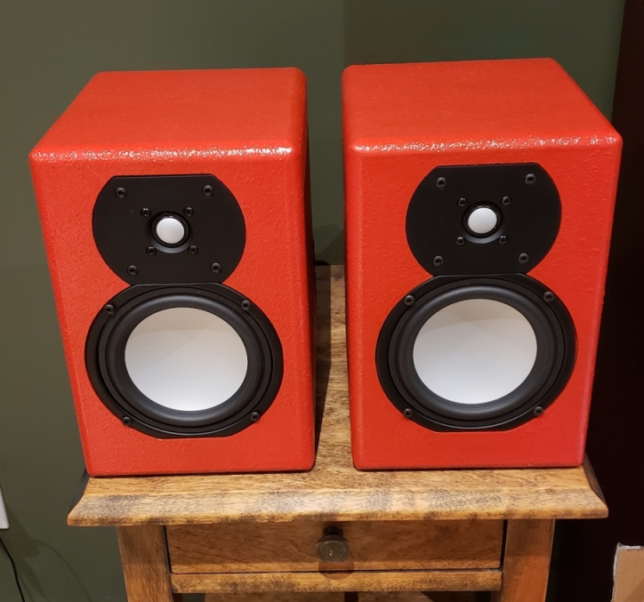

Desktop "Mini" Build

I've wanted to build a pair of speakers for a very long time and during Covid I was looking for a project to work on. So after a lot of research I decided to purchase a speaker kit from GR Research. However, like many industries during Covid impacted by supply chain shortages, the only kit available was for the Desktop "Mini". No problem, I'd never used a soldering iron before and it was the cheapest kit in the line up, so it seemed like the perfect choice.
Warning
The Desktop "Mini" is now discontinued and replaced by the Little Giant Killer 2.0 (LGK). The same build process can be used with all of the available speaker kits.
Watch a few of GR Research's videos and you'll soon understand the benefits of building your own speakers. There truly is great bang for the buck and the satisfaction of doing it yourself. You'll need some tools to ensure a successful build, but overall the experience and results are worth the expense and effort. Although you can't buy the Desktop "Mini", these steps are still applicable for most DIY speaker kits.
Recommended Tools
- 4 Irwin Quick-Grip clamps (or similar) or Dubuque Aluminum Bar Clamps (size will depend on your speaker kit)
- Router with a 3/4" round bit
- Router table (optional)
- Disposable sponge roller
- Soldering Iron
- Heat gun
- Drill and 1/4" drill bit
- Torque and Phillips screwdrivers (size will vary depending on scew sizes)
Additional Requirements
- Wood Glue
- 220 sand paper
- 1 sheet of No Rez or insulation
- DuraTex
- Plastic Bags (Optional depending on the Duratex finish)
- 1 can of spray paint (colour of your choice)
- Zip ties
- 8 3/4" wood screws
Building the Speakers
Assembling the Speaker Boxes
- Even though these are small speakers, gluing up the boxes can be a challenge. Lay out the speaker box pieces and do a dry run prior to the glue up. Also, determine the position the clamps and set them to fit in preparation.
Note
I used clamps on all four corners to ensure the sides were sealed tightly.
- Glue the pieces together in the following order:
- Apply glue to the bottom dadoes.
- Apply glue to the left side dadoes, connect it to the back, and then set into the bottom.
- Apply glue to the right side dadoes, and connect it to the previous assembly.
- Connect the front.
- Apply glue to the top dadoes and complete the box assembly.
- Clamp the speaker and remove any excess glue squeeze out.
- Repeat for the second speaker.
Finishing the Speaker Boxes
- Sand the joints to ensure they are smooth so that the joint lines are hidden when finished.
- Rounding the speaker edges is optional but highly recommended. It reduces refraction and makes the speakers more durable to dings and dents. I used a 3/4" round bit with my router set in a router table. Given the small size of the speakers using a router table makes the task much safer and easier. I rounded the front and side edges with the router. I left the back edges as is and just soften the edges by lightly sanding them.
- Apply DuraTex with a disposable sponge roller to all sides, excluding the back of the speakers. While the DuraTex is still wet dab it with a balled up plastic bag to provide a nice knockdown textured finish.
- Apply three coats of spray paint in the desired colour. My son chose this colour, Behr Paint+Primer Flirt Alert (red).
Assembling the Crossovers
- Twist connect the crossover components together so that they fit the crossover board.
- Mark the location of the four screw holes to mount the crossover board to the speaker and to zip tie the components to the board.
- Drill the holes in the crossover board.
- Solder the crossover component connects.
- Attach the crossover components to the board with zip ties.
- Solder the speaker wire connections.
- Use a heat gun to shrink-tube the speaker wire connections on the crossover assembly.
Final Assembly
- Attach the crossover to the bottom of the speakers with 3/4" wood screws. This step is the trickiest part of the build due to the small size of the speaker opening. An angled electric screw driver can greatly simplify this step.
- Insulate the speaker cabinet walls. I used insulation I had on hand, but will use No Rez in future builds.
- Attach, solder, and shrink-tube the binding post and speaker connections.
- Attach the binding post insert and speakers to the cabinet with the screws provided.